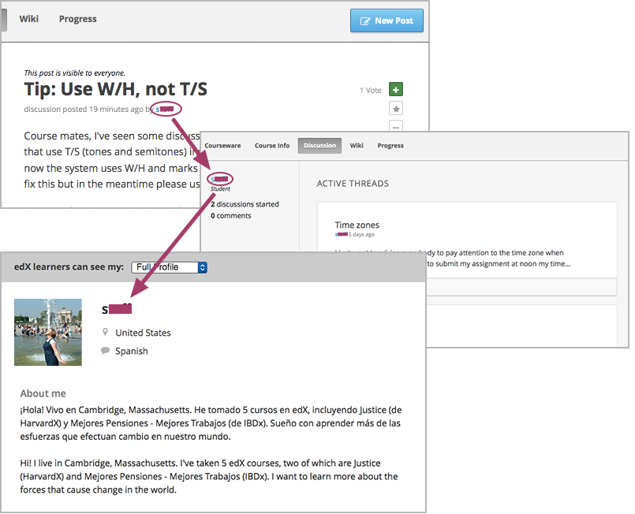

讨论项目，即论坛，旨在构建学生与工作人员，以及学生与学生之间的有效沟通和交流。 创建课程时，您可设立各种讨论课题引导课程参与人员之间的互动， 同时通过运营、管理讨论项目活动鼓励学生参与课程、建立课程社区。
讨论项目（下或称“论坛”）同时也是课程反馈及未来创意的重要来源。
关于运营、协调讨论项目的内容，请参见以下章节：
想了解更多关于分队功能对论坛协调事宜的影响，请参考 管理有学生队列的论坛.
Note
参与课程讨论 部分描述的性能对所有论坛成员开放。 对论坛新人而言帮助也很大。 您可以和学生一起分享其中的内容。 方式有很多，比如，您可以发一条名为“第一次使用论坛？”的帖子， 在帖子中提供您认为对学生最有用的信息。
学生与员工可以通过论坛分享观点、交流看法、交换意见、解决问题。论坛中的互动分为三种。
要么展开对话，要么引出一个值得关注的问题。您在发帖时，通常将其归类为“提问”或“讨论”。
评论一般不针对整个帖子，只针对某条回复。
由帖子、回复、评论组成的对话有时统称为“话题”。
所有员工及参与课程的学生均可发帖、回帖或发表评论， 同时也可以查看其他课程参与者发布的帖子、回复及评语。
课程社区的所有成员，包括员工和学生，均可以赋予论坛协调员或管理员等讨论项目管理职能。 讨论话题可以保存，是课程历史的组成部分。
Note
“参与课堂讨论”一章描述了论坛的部分功能，这些功能对所有参加论坛的人都开放， 对论坛新人而言帮助也很大。 您可以和学生一起分享其中的内容。 方式有很多，比如，您可以发一条名为“第一次使用论坛？”的帖子， 在帖子中提供您认为对学生最有用的信息。
论坛管理员角色必须为您课程团队中的教员。 课程作者、有管理权限的团队成员以及导师可以授予管理员权限。 更多关于添加论坛特权的内容请参考 安排讨论项目管理职能.
edX课程的论坛既可以添加您之前专门为某个课程单元设计好的讨论模块， 也可以开展全课堂范围的讨论课题，比如“课程反馈帖”，“答疑帖”，“技术支持帖”等等。 您可通过Studio添加各种不同类型的讨论课题。
更多关于创建讨论主题的内容，请参考 创建全课堂讨论课题 和 创建内容指定讨论主题 。更多关于使用群配置讨论主题的内容请参考 在包含队列的课程中设置论坛.
所有课程均包括一个名为“讨论”的页面。创建课程时， 系统会在该页面中默认生成一个名为“General”的讨论课题。
课堂讨论课题，在课堂上引导学生分享、查找信息。 这类课题可以包含“反馈”、“答疑”、“技术支持”等字样。 这类课题的可访问时间与课程的可访问时间一致。
Note
确保您课程中的讨论主题有唯一的名称， 无论是全课堂讨论课题或是指定内容讨论课题。 如果不同的主题名称相同，学生会不知道自己在哪个主题中。 例如，不要添加名称为“General”的指定内容讨论课题， 因为全课程讨论问题中已经有叫“General”的问题了。
如何创建全课堂讨论课题：
Note
在讨论主题ID中，您只能使用字母和数字字符，以及以下特殊符号：下划线、连字符和句号。
操作成功后，当学生单击课程的“讨论”页面时，您的课程即出现在下拉列表中。
Note
在分队课堂中，全课堂讨论课题对所有人均可见。 所有小队中的学生均可访问课题中的帖子及回复。 您也可以手动将这类课题配置为分队讨论课题。 详见 全课堂讨论主题和队列.
您需要在单元中添加讨论组件。一般情况，您在Studio中创建课程的时候需要这么做。 请遵循 创建讨论组件 中的指导内容。 讨论主题将与所在单元相关联。
Warning
按照推荐步骤添加讨论组件。 不要使用Studio中的 复制 创建讨论主题。 不要在不同区域多次使用同一个论坛ID。 复制讨论组件将导致讨论主题包含同样的对话，即使学生是在不同的讨论主题下发布信息。
更多关于指定内容讨论主题信息请参考 讨论主题可见性.
Note
在包含群组的课程中，所有指定内容讨论主题在您第一次添加的时候就已经分组。 学生只能看到相同群组中成员的回应。您可以更改内容讨论主题设置，使其对课堂中所有学生可见。
更多信息请参考 指定内容讨论主题和队列.
您需要指定一个团队帮助您运营讨论项目。
Note
您在Studio中建立的课程团队（或您在教师控制面板中指定的课程工作人员及导师） 并不默认为论坛管理人员。
论坛管理人员应由从课程团队中另外指定，其职责是协调、管理课堂讨论项目。 论坛管理人员可由课程作者、导师（教师控制面板中的） 或其他有管理权限的团队成员（Studio中的）担任。
论坛管理人员的分类及职能简述如下：
安排论坛管理人员时，您需要提供他们的邮箱地址或用户名。
首先，您必须是课程作者，或担任“导师”职位（即，您必须在Studio中有管理权限）。
要删除用户的特权，您必须是课程作者或导师（您在Studio中有管理员权限 或在LMS中是导师）。
在课程开始且单元发布之前， 您为讨论组件指定的种类和子类名称在 论坛 栏中不可见。
然而，您创建在指定内容讨论主题中的基础帖在 论坛 栏中立即可见， 尽管所包含的分类和子类名仍不可见。我们建议您在单元发布前不要在指定内容讨论主题中发帖。 更多关于发布日期和组件可见性的信息请参阅 设置内容可见性.
相反，您在Studio中的 高级设置 中创建的 course-wide discussion topics 包含默认”General”讨论主题，是立即可见的，无论课程是否已经开始。 这些主题与任何特定的章节和小节无关，也不受限于发布日期。
讨论项目管理团队可通过多种方式运营论坛，比如在帖子中作贡献、给回复点赞、 认可某条回复等等，他们通过这些方法引导学生发布与话题相关的消息。 下面的几个小技巧能帮助您有效管理讨论项目。
为区分不同种类的消息，并使消息更方便查找， 您可以指定一系列命名规则以区分不同种类的帖子主题以及回复、评论。如下例：
讨论项目管理团队和学生均可使用这类命名规则以便更有效地搜索信息。
创建新帖子时，必须选择帖子的类型，是“提问”还是“讨论”。 讨论项目团队成员在选择发帖类型时应慎重，同时也应鼓励学生慎重发帖。详见 查找提问和讨论.
为帮助学生学会如何在课堂讨论中尽可能多地收获知识， 教会学生如何根据自己的问题和讨论寻找最佳的讨论课题， 您可以在课程开始之前发几篇帖子作为课堂讨论的“开胃菜”。示例如下：
我们强烈建议您不要在课程开始或单元发布前在特定内容讨论主题中创建基础贴。 特定内容讨论主题的类名和子类名与所在单元的发布可见性相关联，在单元发布之前， 这些主题是不可见的。更多细节请参考 讨论主题可见性.
为了鼓励学生多发布更长、更线性化的讨论话题， 少发布大同小异、支离破碎的散帖，论坛管理团队可以试试下面提到的几个技巧。 但是请注意，长篇讨论（通常指回复、评论数量超过200条的讨论）阅读起来有一定难度， 有可能影响学生的课堂体验。
帖子置顶。帖子置顶功能可以使某条帖子出现在“讨论”页面中， 帖子列表的第一条，从而使更多学生能够看见、回复该帖。 您可以置顶自己写的帖子，也可以置顶其他人的帖子。 选择“更多”图标，然后点“置顶”即可。
给回复点赞。点赞意味着您认为该条回复提供了有价值的信息。 单击右侧的“√”图标即可。
将某个问题标记为“已回答”。操作方法同“点赞”。
关闭帖子。如果您认为某条帖子很多余，可以在该帖的回复中粘贴一条链接， 指向您希望学生做出贡献的帖子，然后关闭本条帖子。 帖子关闭后，无法继续互动。选择“更多”图标中的“关闭”选项即可。
通过帖子/回复/评论提供指导信息。您可在全课堂讨论课题的帖子中发布本章第一节中提到的内容， 也可以设计下一章“edX论坛剖析”中的内容，提示学生何时开始话题，如何回复帖子，如何评论回复。
讨论团队成员会随时跟踪监控讨论项目，促使论坛高效运转。 他们也可以从论坛中收集信息，比如学生对哪些知识存在疑问， 对哪部分课程比较感兴趣，等等，并将这些信息转告给课程工作人员。
如果希望培养并维持积极的论坛文化，则需花更多管理时间用于审核、回复论坛内容。 一个大型开放式在线课程的论坛维护时间每周应不少于5小时， 维护工作包括阅读讨论话题、回复、编辑讨论帖，以及和其他讨论团队成员及课程工作人员积极交流。
更多信息请参考 安排讨论项目管理职能.
如果您想了解某个论坛参与者，您可以查看学生的edX信息。学生可以部分或全部开放信息。
以下步骤查看学生信息：
下图呈现了帖子里、活动记录页面的用户名和学生个人页面。
更多关于创建个人简介的内容请参考 View, Create, or Edit an edX Profile.
关于如何参与论坛活动，您可以选取几个最佳案例作为模范， 然后以课程讲义文件的形式发放给学生，或在课程中单独开一个页面详述。 您可以通过这些指南表达自己对学生的期望，也可以介绍edX论坛的功能。
您也可以选择将 参与课程讨论 一章中的内容与学生共享。 它描述了讨论参与者可以使用的所有功能，即使是论坛新手也可以从中受益良多。
论坛管理者可以通过优化论坛互动行为，使论坛传播积极影响，最大化地利用讨论时间。
本节内容的模板详见 论坛协调员指南.
学生创建新帖子时需指定帖子的类型，是寻找准确的信息（提问）？ 还是开始一场开放性的对话（讨论）？
在“讨论”页面中，提问帖通常带有“问号”标记，讨论帖带有“对话气泡”标记。 当提问帖的问题得到解决，且答案被采纳，问号标记自动变成“√”标记。详见 回答问题/采纳答案.
除了通过这些标记辨别之外，您还可以通过论坛的筛选功能查找之前的提问帖和讨论帖。 在“讨论”页面上方，筛选条件默认为“所有帖子”。您也可以将其更改为：
三种论坛管理职能均有权编辑和更改帖子、回复和评论的内容 。一旦发现泄露机密、泄露答案，或含有不良信息、偏离主题信息的内容， 应及时删除其文本、图片和链接。
三种论坛管理职位均有权删除帖子、回复及评论的内容。 含有垃圾信息以及不文明用语的帖子应直接删除。
Important
若发现帖子内容含有威胁性或强烈攻击性的内容，请联系所在学院的校园保卫处， 报告事件后再考虑采取进一步行动。
学生有权上报他们认为含有不良信息的内容。 三种论坛管理职位均可查证这些内容，必要时可以编辑或删除该内容。
您可以关闭课程论坛，关闭后，学生无法继续发布信息。 论坛可以暂时关闭，譬如在考试的时候，也可以永久关闭，譬如在课程结课的时候。
关闭论坛后，所有课程单元中的讨论课题以及全课堂讨论课题均会受到影响。
Note
关闭论坛后，学生无法继续讨论。为使学生理解这种情况， 您可在“课程信息”页面通知论坛关闭日期，并将该日期挂到“General”讨论课题下。
您需要在Studio中设置论坛开始关闭与停止关闭的时间。请按下面的格式输入对应值:
["YYYY-MM-DDTHH:MM", "YYYY-MM-DDTHH:MM"]
其中：
例如，如果您希望在七月份的期末考试期间暂时关闭论坛， 然后在2014年8月9日永久关闭论坛，输入如下两组数值：
["2014-07-22T08:00", "2014-07-25T18:00"], ["2014-08-09T00:00", "2099-08-09T00:00"]
每对方括号仅表示一组时间对。
{kind=link}